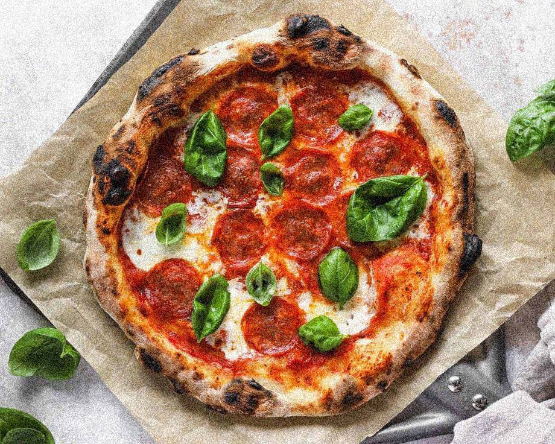

Dafür steht unsere Marke
Bacio steht für die beste Rezeptur des Teiges, die beste Qualität der Zutaten und die beste Art der Zubereitung. Nicht um sonst zieht die Pizzeria nicht nur Touristen an, sondern ist die Nummer eins der Stadt. Bacio möchte ein Erlebnis mit der Welt teilen. Die eigenen Erkenntnisse, das Wissen und die Rezeptur sind Ergebnis von monatelangen Forschungsreisen, von Erlebnissen aus ganz Italien. Armando Ammirati und Andreas Schmid haben ihre Rezepte aus den verschiedensten Orten aus Italien mitgebracht und möchten die Erlebnisse der Orte gerne durch ihre Pizza mit allen teilen. Mit dem neu entwickelten, smarten System der Auslieferung mit Karton und Trockeneis, können die Geschäftsführer nun die Erlebnisse noch einfacher zu den Menschen bringen, nun sogar auch direkt zu ihnen nach Hause. Jede Pizza ist inspiriert von einem der Orte, an denen Armando und Andreas im Laufe ihrer Forschungsreise waren. Sie lernten die besten regionalen Produkte kennen und lassen alle Erlebnisse in die eigenen Produkte einfließen.
Ein Kuss aus dem Ofen
Willkommen in der Welt von Pizza BACIO, der ersten Tiefkühlpizza, die deine Geschmacksknospen wie eine frische Pizza aus dem Lieblingsrestaurant verwöhnt. Warum? Weil wir bei Pizza BACIO nur die hochwertigsten Zutaten verwenden und jede Pizza bei über 400°C im Steinofen vorbacken. Durch den Einsatz ausgewählter Holzsorten, die das Aroma verfeinern, schaffen wir ein Geschmackserlebnis, das du so bei keiner anderen Tiefkühlpizza findest. Wir bei Pizza BACIO achten darauf, dass unsere Zutaten nicht nur geschmacklich überzeugen, sondern auch nachhaltig und umweltfreundlich sind. Unsere Liebe zur Pizza geht über den Tellerrand hinaus – wir möchten, dass du nicht nur eine großartige Pizza genießt, sondern auch ein gutes Gefühl dabei hast.
Für die problemlose Auslieferung haben wir ein smartes System mit Karton und Trockeneis entwickelt. Dieses ausgeklügelte System gewährleistet, dass deine Pizza BACIO innerhalb von 24 Stunden bei dir ankommt und dabei die Kühlkette nicht unterbrochen wird. So bleibt deine Pizza immer frisch und bereit für den Genuss.
Noch nie hast du eine Tiefkühlpizza so heiß geliebt. Erlebe den Unterschied bei jeder Sorte, die wir bieten.
Probiere Pizza BACIO und entdecke die neue Art, Tiefkühlpizza zu genießen.
Deine Geschmacksnerven werden es dir danken!